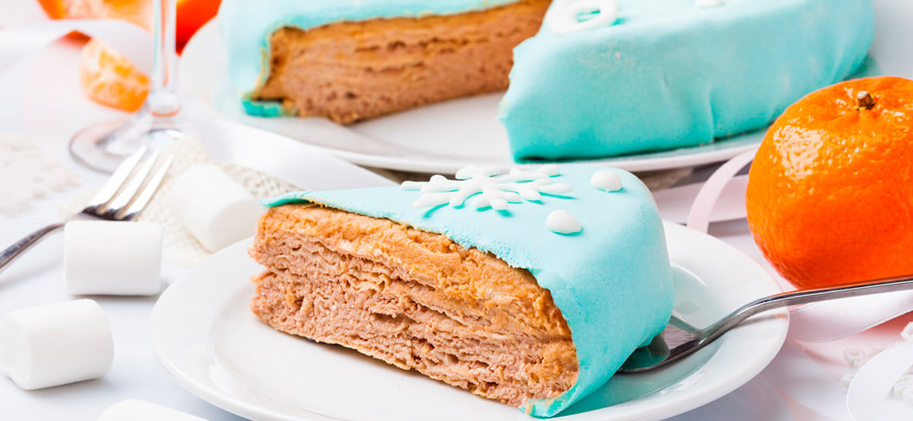

Вафельный торт с маршмелоу

ИНГРЕДИЕНТЫ:
- Вафельные коржи «КЛАССИКА ЛЕКОРНА» — 2 пач.,
- творог — 400 г,
- сахарная пудра — 400 г,
- масло сливочное — 250 г,
- сметана — 3 ст. л.,
- какао порошок — 1 ст. л.,
- сахар ванильный — 1 ч. л.,
- маршмеллоу (зефир) — 150 г,
- крахмал кукурузный — 200 г,
- печенье "Юбилейное " — 1 пачка,
- сахарная пудра — 150 г,
- яйцо — 1 шт,
- лимонный сок — 20 мл
ПРИГОТОВЛЕНИЕ:
- Приготовьте мастику: Зефир разогрейте в микроволновой печи пока он немного не увеличится в объеме (40–60 сек). Можно также сделать это на водяной бане. Размешайте, чтобы получилась однородная масса.
- Небольшими порциями добавляйте сахарную пудру вымешивайте лопаткой. Когда пудра закончится, начинайте добавлять крахмал. Как только мастика загустеет переложите ее на поверхность с крахмалом, вымешивайте до тех пор, пока мастика не перестанет липнуть к рукам, каждый раз добавляя крахмал (вымешивайте 5–7 минут).
- Заверните мастику в пищевую плёнку. Оставьте на полчаса. мастика может храниться до суток в холодильнике, если она сильно загустела – положите ее в микроволновую печь секунд на 10, после этого вымесите.
- Приготовьте крем: Сливочное масло взбейте миксером вместе с сахарной пудрой до гладкости. Добавьте небольшими порциями сливки, взбивайте каждый раз до однородности.
- Творог в отдельной емкости разотрите вилкой. Добавляйте небольшими порциями в масло и продолжайте взбивать. Добавьте какао и ванильный сахар. Готовый крем должен получиться однородным. Это зависит от мягкости творога.
- Очень тонким слоем смажьте вафельные коржи. Верхний корж не намазывайте. Должно остаться 3 ст. л. крема.
- Приготовьте “шпаклевку под мастику”: Печенье измельчите в блендере в крошку. Крошка должна быть одинаковая и мелкая. Также печенье можно натереть на очень мелкой терке.
- Смешайте крошку с остатками крема до состояния густой пасты.Чтобы сделать пасту более жидкой, добавьте немного сливок или молока. Тонким слоем обмажьте бока и верхний корж. Разровняйте лопаткой. Переложите торт на блюдо или тарелку для подачи.
- Раскатайте масти на поверхности посыпанной крахмалом. Мастика очень легко рвётся, не давайте ей прилипнуть к столу. Поднимайте ее, накручивая на скалку. Перенесите мастику на торт и обрежьте края ножницами, оставляя по 3–4 см запаса. Подверните мастику под торт. Украсьте фигурками с айсинга.
- Приготовьте «Айсинг»: Взбейте 1 белок до бела, перемешайте до очень густой массы с 150 г сахарной пудры, добавьте несколько капель лимонного сока. Масса должна получится очень густая. Переложите в кондитерский мешок или в пакет, сделайте небольшое отверстие ножницами. Нарисуйте или распечатайте снежинки или другие фигурки на обычной бумаге, покройте бумагу листом пергамента, или подойдёт любая прозрачная поверхность, плёнка, пакет, файл. Нарисуйте по контуру фигурки и дайте высохнуть в течение 5–12 часов. Приятного аппетита!
1
10